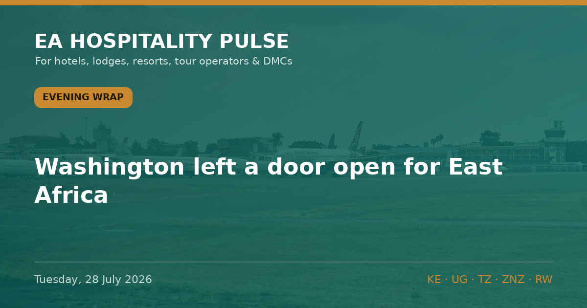

← All editionsWashington left a door open for East Africa.
Washington left a door open for East Africa. It shuts on Friday, and nobody in this industry has walked through it.
━━━━━━━━━
1️⃣ THE COMMENT WINDOW ON THE UGANDA ENTRY BAN CLOSES FRIDAY
The CDC order suspending entry to the US of anyone present in DRC, Uganda or South Sudan in the previous 21 days was published in the Federal Register on 16 July (91 FR 43636, docket CDC-2026-0892). It carries a 15-day public comment period that closes 31 July. In the same document CDC answers the comments it received last round — and two of them asked for exactly what Ugandan tourism needs: that Uganda be assessed independently of DRC. CDC refused, in writing: "the outbreak remains interconnected across national borders." We have not seen a single East African tourism body, airline or destination marketing organisation on that docket.
🎯 So what: If you sell Uganda to Americans, file a comment at regulations.gov under docket CDC-2026-0892 before Friday, with your own cancellation and rebooking numbers in it. Evidence beats sentiment, and this is the only formal channel that exists.
🏷 Bush/City | 🇺🇬 🇰🇪 🇷🇼 | Confirmed
2️⃣ THE BAN NOW CATCHES US GREEN CARD HOLDERS
Quietly, the exemption that let US lawful permanent residents through was deleted. 42 CFR 71.40(f) was amended on 27 May (91 FR 31362) and the 13 July order applies "including lawful permanent residents of the United States." A green card holder who treks Bwindi cannot go home for 21 days. That is a distinct, high-value segment — diaspora, US-based professionals, repeat gorilla clients — and most of them do not know.
🎯 So what: Put a one-line non-US-citizen warning into every American-market quote and pre-arrival email tonight. Offer a free date change rather than lose the booking to a surprise at the airport.
🏷 Bush/City | 🇺🇬 | Confirmed
3️⃣ UGANDA'S CONTACT-TRACING CHAIN IS NOW EMPTY
Uganda's Ministry of Health EVD dashboard, updated today: 20 confirmed cases, 0 current admissions, 0 active contacts under follow-up, 821 of 831 listed contacts having completed 21 days. 2,482 people tested, 5,465 travellers screened at points of entry. That is day 12 of a 42-day countdown that started 16 July and finishes around 27 August.
🎯 So what: Uganda's epidemiological case is now genuinely strong. The problem is that the US decision point is 12 August — a fortnight before Uganda can be declared clear. Sell the data, but do not promise clients an August lift.
🏷 Bush/City | 🇺🇬 | Confirmed
🔗 This edition on the web: https://eahospitalitypulse.com/editions/pulse-2026-07-28-evening.html
💼 Today's Big Read on LinkedIn: https://www.linkedin.com/company/ea-hospitality-pulse/
— EA Hospitality Pulse | Daily intelligence for city, bush & beach properties
📣 Telegram (full editions) 💬 WhatsApp (daily skim) 💼 LinkedIn (the Big Read) 🗂 Every edition